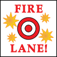

13. Basic Combat Principles¶
13.1 General¶
Units conduct attacks using either their Anti-Personnel Firepower (APFP) or Anti-Tank Firepower (ATFP) ratings, whichever is appropriate. Each unit may only attack once per turn (Exception: Close Assaults, and Final Opportunity Fire versus an overrunning AFV).
13.2 Direct and Indirect Fire¶
For simplicity's sake, V&V considers all combat on the board to be direct fire, with the exception of on-board mortars (see 12.6 Mortars). Even artillery Guns, which are typically known as indirect fire weapons, are used as direct fire weapons. They are simply being used in an improvised capacity, with the crew firing over open sights at targets within their LOS.
13.3 Range and LOS¶
A unit may fire on a target to which it has range and LOS. The range is the number of hexes from the firing unit to the target unit, counting the target unit(s) hex, but not the firing unit(s). A Gun has no range limit, and may target a unit anywhere on the board as long as the unit has an unblocked LOS to the target.
13.4 Cover Modifiers¶
The cover (terrain) modifier of the target hex is added to the attacker's dice roll. Units in a fortification or entrenchment (see 20. Fortifications and Entrenchments) add the position's cover modifier to the attack dice roll. Hex and hexsides between the attacking unit(s) and the target hex that contain hindrances will further modify the attack dice roll, and hindrance modifiers are cumulative.
13.5 Gun Shields¶
A Gun Shield provides extra protection to the inherent crew of the Gun, but only when attacked from within the Gun's FFA, and only when the Gun is not moving. Guns with a Gun Shield may ignore the first Casualty Point from AP fire, and when attacked by AT fire the Gun Shield provides a +1 cover modifier. A Gun Shield's protection against AT attacks is cumulative with the cover modifier of the hex or fortification the unit occupies.
13.6 Leadership Modifiers¶
A leader in the same hex with an attacking infantry unit or fire group may modify the attack dice roll (AP or AT) with his Leadership Modifier. A leader may modify his attack when firing alone. Only one Leadership Modifier may be applied to an attack roll, and a leader may only modify one attack per turn (Exception: Close Assaults, and Final Opportunity Fire versus an overrunning AFV).
A leader that modifies an attack is marked as fired, whether or not he uses his APFP in the attack.
13.7 LOS and Firing Through Occupied Hexes¶
Units have no effect on LOS or combat. Units may trace LOS and fire through hexes occupied by other units, friendly or enemy, with no detriment.
13.8 Opportunity Fire¶
Opportunity Fire is a form of defensive fire a player may use during the opposing player's Movement Phase. When a unit moves (i.e. enters a new hex), any enemy unit that has LOS to that unit, and not marked with a Fire marker, may conduct an Opportunity Fire attack versus the unit. The player conducting the Opportunity Fire attack may stop the target unit at any point during the move, but only after the unit enters a new hex. If entering a hex will take the unit out of LOS the Opportunity Fire attack cannot be made. If the moving unit enters a hex containing other, non-moving friendly units, only the moving unit may be targeted, or affected by, the Opportunity Fire attack. If a unit is pinned or immobilized (AFVs only) while moving through a friendly hex already stacked to its limit the unit is eliminated (for its full Casualty Point value, if applicable). Any targeted unit still eligible to move (i.e. not pinned), including units moving as a stack, may continue to do so after the Opportunity Fire attack is resolved.
| Target hex | APFP dice roll modifier |
|---|---|
| No positive cover modifier | -1 |
| Adjacent hex | -2 |
APFP Opportunity Fire attacks versus units where no positive cover modifier applies (terrain, Assault Movement, etc.) receive a -1 dice roll modifier, and a -2 modifier applies versus units in an adjacent hex, regardless of (and in addition to) applicable terrain effects. Units that conduct an Opportunity Fire attack are marked with a Fire marker.
13.9 MG Fire Lanes¶

A player may establish a fire lane whenever an infantry unit with an MG makes an Opportunity Fire attack. Fire lanes are voluntary; a player is not required to create a fire lane. Fire lanes are not established with any other AP fire combat; only infantry Opportunity Fire attacks with an MG may create a fire lane. AFV and vehicle MGs cannot create fire lanes. The fire lane extends from the firing hex to the target hex. A Fire Lane marker is placed in each hex along the original LOS, including the target hex, but not the firing unit's hex. The number of Fire Lane markers used is equal to the original range to the target (i.e. if the range was four hexes, four Fire Lane markers are placed). The fire lane should maintain a consistent pattern, if possible, with each Fire Lane marker placed one after another in adjacent hexes, or adjacent alternating hexes. Infantry, Gun, or unarmored vehicle units that enter a fire lane hex are immediately attacked using the 1-4 row of the AP Combat Table. No combat or cover modifiers apply, as units are considered to be entering an established fire lane (Exception: See 13.91 Fire Lane Crossfire, below). Units already occupying a fire lane when it is established are not affected; a unit is only affected when entering a fire lane hex. Fire Lane markers are removed at the end of the current Move Phase.
13.91 Fire Lane Crossfire¶
Multiple Fire Lane markers may be placed in a hex, if Opportunity Fire attacks from multiple machine guns affect the same hexes. One Fire Lane marker per attacking machine gun is placed in a crossfire hex. If multiple machine guns from the same hex fire along the same path, each hex in the fire lane would receive multiple Fire Lane markers, one per machine gun. Each additional Fire Lane marker in a hex, after the first, subtracts -1 from the fire lane's attack. For instance, if two machine guns conduct an Opportunity Fire attack and their fire lanes cross, causing two Fire Lane markers to be placed in the crossfire hex, that hex would attack on the 1-4 row of the AP Combat Table and receive a -1 modifier.
Fire Lane Examples¶
The examples at left detail some of the options available when creating a fire lane. A fire lane extends from the hex of origin, in this case from the hexes containing American units firing their light machine guns, out to the target hexes. Use the LOS from the hex of origin to the target hex to determine the fire lane's pattern. Fire lanes must maintain a consistent pattern, either in a straight line along the LOS (as shown from hex A5 to hex E3), or equally staggered on alternating sides of the LOS. When staggering, the fire lane must maintain the same pattern along its entire length, with Fire Lane markers alternately falling on each side of the line, as determined by the player creating the fire lane. Note: Each machine gun may only create a single fire lane. The two fire lanes originating from hex A5 are simply detailing fire lane possibilities.
13.10 Squad and Half Squad Consistency¶
When squads are reduced to half squads, or voluntarily split into two half squads, the half squads must be of the same type as the original squad (i.e. a German Rifle squad would be reduced to a German Rifle half squad, or split into two Rifle half squads). The same rule applies when two half squads are combined to form a full squad; the two half squads must be of the same type as the full squad. A player may only begin a game with half squads if indicated by a scenario's OOB.